有些混蛋骂了我
我受到了伤害
另外一些混蛋又来赞颂我
我又受到了伤害
我把内心与灵魂奉献出来
他们却将其蚕食一空
——《潜行者》
预告片来源于youtube
塔尔科夫斯基的《潜行者》是一部探索人类心灵深处、勇开灵魂内核的巨作，其意像之深邃、境界之渺远、技巧之柔美，迄今为止为电影史上罕见。
这部作品影响深远，从土耳其大导演努里·比格·锡兰的《远方》，再到去年毕赣名噪一时的《路边野餐》，都从《潜行者》中汲取了灵感和营养，他们用各自的方式向塔尔科夫斯基致敬。
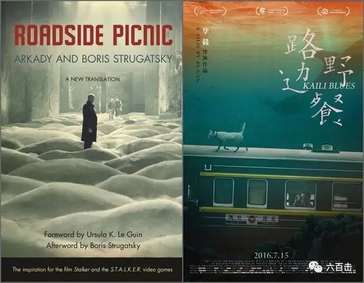
左图：《潜行者》右图：《路边野餐》
《潜行者》也收获了当年戛纳电影节天主教人道奖，被英国权威电影杂志《视与听》列为影史50部最伟大电影之一。
电影改编自苏联斯特鲁伽茨基兄弟的科幻小说《路边野餐》 。
故事背景是这样的：
外星人曾经迅疾而短暂地光临地球，似乎是漫无目的，没有试图联系或捕捉地球人。
他们突然离开后，在地球上留下一片奇异的区域，那里常有陌生而奇怪的事情发生，有混合所有物理定律和完全不知名的事物，这个区域被称之为“区”。
这个“区”有致命的危险性，很快警察就在周围戒备，不允许别人进入“区”。
但是有消息传出，“区”中有个“房间”，在那里可以实现人的愿望。
于是越来越多的人都想要进入那个“房间”，而要穿过复杂危险的“区”并找到“房间”，则需要专业人士，潜行者就是这样的人，他们专门负责带领别人进入“区”，并帮助他们找到“房间”。
这样的背景之下，电影就讲述了一个潜行者不顾妻子的反对，带两人进去“区”的故事，一个是灵感枯竭的畅销书作家，想要获取灵感而去；另一个是沉默的物理学教授，为了探明真相而前往。
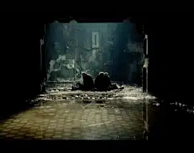
这趟前往“区”的旅程，没有好莱坞式一波三折的惊险，也没有西欧式的生活漫谈，而是塔尔科夫斯基“圣徒般”的个人内心世界漫游。
是“个性”与外部世界之间的冲突，在这样的冲突之下埋藏着的是永恒的寂寞和对超越性上帝的永久怀念。
这部电影非常晦涩，某种程度上也很“难看”。
163分钟的电影只有142个镜头，平均镜头长度超过1分钟，许多镜头持续4分钟以上。
对于习惯于简单叙事和快节奏视听语言的观众来说，可以说是一个煎熬。
毕赣在采访中透露，他看《潜行者》睡着了三次，但是坚持看完后，受到非常大的震撼和感动。
所以为了让大家更好理解这部电影，我们先从内容入手，再来讨论塔尔科夫斯基的视听语言。
1、作家 教授 “房间”
要了解电影在表达什么
我们先从物理学教授和作家为什么要进入“区”谈起
从电影刚开始我们知道，教授觉得这个世界沉闷乏味，令人难以忍受。
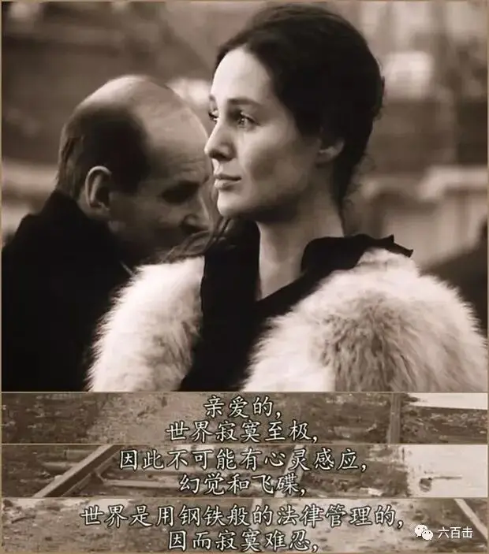
而作家的情况与教授不同，他告诉教授：
我挖掘真理的时候经常会出现旁枝末节
这些旁枝末节又会常常代替真理
到最后，挖掘出来的东西.....难以启齿
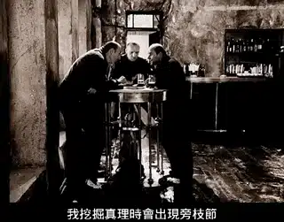
作家没有继续讲下去，后来三人躲过警察一同踏上了寻找“房间”的旅程。
伴随着“区”内瞬息万变、若幻若真的景象和恐怖的陷阱。
三人在疑虑和情绪的爆发中，让我们逐渐窥见了作家和科学家内心的焦虑。
作家告诉教授和潜行者，“房间”能够满足访客的愿望，但是他根本就不知道自己需要什么：
我该从哪里知道，我想要的东西是什么
我该从哪里知道，其实我并不想要自己想要的东西
还是说，我实际上不想要自己不想要的东西
它们都是捉摸不定的东西
当我们说出他们的名字，它们的内涵就像烈日下的水母
开始模糊，融化，乃至消失
我的良知渴望素食主义赢得整个世界
而我的下意识却渴求一块抹上汁的肥肉
那我想要什么？
相比于感性敏感的作家，教授则很多时候显得比较理性和沉默，塔尔科夫斯基借着作家对于教授的嘲笑和批驳揭示出教授的焦虑：
那该知道些什么？
二项式定理？
还是内心深奥的道理？
你在你的研究所里
声名狼藉
他们不给你考察资金
你就一股脑子
把一大堆乱七八糟的仪器赛进背包里
非法闯入“区”区
把一切的奇迹
都转换成代数的计算
你最好去厕所的墙上去画画
你这夸夸其谈的无才之徒
不管怎样 你们的工业科技 你们的高炉转轮
还有别的乱七八糟的东西
设计出来都是为了减轻负担，享受更多
这些全都是拐杖和义肢
人类之所以存在
是为了艺术创作
与其他人类活动不同，艺术创作是无私的
那是宏伟的幻想
真实的绝对写照
而当潜行者带作家和教授来到“房间”门口的时候，暴露出来的也并非两人心底的愿望，而是二人心底里最隐秘的私欲。
二人拒绝进入“房间”
原来作家根本就不相信“房间”存在的意义。
而教授更是别有用心，他害怕“房间”被坏人利用，想要用核武器炸毁“房间”。
2、潜行者
谈完了教授和作家，我们再来谈一下潜行者，这是一个特殊的职业，要承受很多的痛苦和逼迫，随时都有可能在“区”中丧命。
潜行者是个理想主义者，塔尔科夫斯基对他赋予了极大的信仰使命感和希望。
像塔氏其他电影中的“疯子”一样，潜行者像是一个圣愚，他有着敏锐的看见，却又常常无法表达，深处世界又常常格格不入，充满着孤独的坚毅。
面对作家和教授“骄傲”的动机，潜行者深刻的知道，进入“区”和“房间”的人并不是好人或者坏人，而是绝望的人，他明白作家和教授的焦虑更多还是来自于完全以自我为中心的欲望：
但愿一切如计划进行
但愿他们相信
让他们为自己的欲望投以一丝嘲笑
因为他们所谓的欲望实际上不过是内在的动力
不过是灵魂和外界之间的摩擦
最重要的是让他们变得像小孩那样无助
因为软弱是伟大的
而意志力是毫无意义的
当一个人降生于世之时
他是何等的脆弱和柔和
当他行将就木之时
他又何等的僵硬和麻木
当一颗树茁壮成长
它是何等的葱郁与婀娜
但当它变得干枯与僵硬之时
便垂死挣扎
僵硬与挣扎
是死亡的伴侣
婀娜与柔弱是鲜活生命的体现
要知道
生命的僵硬是不可抗力的
潜行者为了带人进入“房间”，付出了极大的努力和煎熬，而最终作家和教授对潜行者的嘲弄，几乎让他绝望。
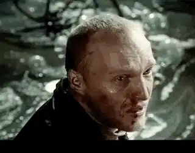
而真正让潜行者崩溃的是，教授和作家只关注自己的得失，对“房间”漠不关心
甚至根本不相信“房间”存在。
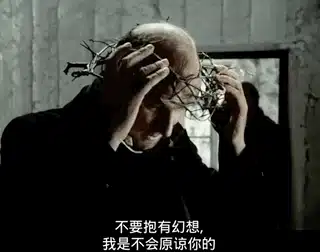
潜行者对于其他人信念的丧失感到痛苦和无力，这种痛苦让潜行者疲惫甚至让他的信念也发生了动摇。
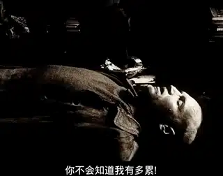
回到家中潜行者歇斯底里地向妻子抱怨：
潜行者：
你不会知道我有多累
只有神才知道
他们这帮作家，科学家还自诩知识分子
他们毫无信念
他们负责信赖的器官
因为长期不使用，因而萎缩退化
妻子：
你应该怜悯他们
不要生他们的气
潜行者：
你没看见他们吗
双目只有空虚
他们头脑想着就只是
怎样把自己的身价抬高点
好让自己的一举一动
得到相应的报酬
他们知道自己不枉此生
知道自己身兼使命
要知道，他们的生命只有一次！
难道像他们这样的人
还会相信什么么
.........
没人会相信的
不仅仅是他俩
谁都不会相信
.........
天哪
最可怕的是
没人再需要“区”、“房间”
塔尔科夫斯基借着潜行者、作家、教授三人之间的对话，非常思辨地探讨科技主义、艺术以及信仰。
同时，随着三人逐渐走入“区”的过程，让三人逐渐暴露私欲并在“房间”门口完全去面对自我。
作家和教授自我的暴露带来的是更大的自我迷失和愤世嫉俗，潜行者的信念最终也备受挑战和质疑。
而最终潜行者和妻子一番对话更是充满了绝望和无奈，这是一种传道人遭遇毁灭般挫折的极大软弱，是塔尔科夫斯基永恒个性被世界打压的极大冲突，是人们不愿意面对灵魂深处渴欲的荒凉生命。
但是塔尔科夫斯基却神奇般地通过最后一个场景，将希望和信心从绝望的泥潭中升腾而出，潜行者的女儿可以用意志移动桌上的水杯。
当杯子掉在地上的时候，贝多芬的《欢乐颂》响起，电影结束。

塔氏用这个超自然的场景传达了潜行者信念的真实和希望：奇迹是经验论之外的事。
这部电影有着伟大的“独立性”，这种独立性造成了塔氏电影中主人公个性与世界之间的冲突，这是把握《潜行者》的钥匙。
而要进一步体验塔尔科夫斯基电影的诗意和魅力，我们需要进一步把握他近乎“奇迹”一样的视听语言。
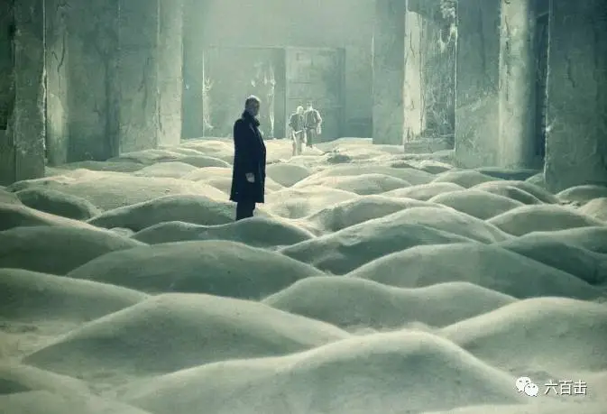
1、诗意变幻的色彩
这部电影是充满未来主义的，“区”内的世界是正常的彩色世界，而“区”外人类居住的世界却是棕黄色，令人压抑又充满绝望。
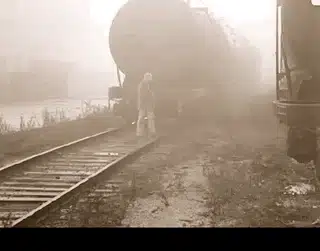
在两种世界的切换上，塔尔科夫斯基处理的非常自然。
我们来看一下第一次色彩的变化，当三人躲过警察的追铺，乘坐轨道车慢慢进入“区”的过程中，塔尔科夫斯基用了一个特写长镜头，对准三人的面部。
而最后镜头摇到教授的时候，教授眼睛自然看向前方，接着镜头切换到教授的主观镜头，教授眼中的“区”变成了正常的彩色世界，借着主观镜头也很大程度上降低了色彩切换的生硬。
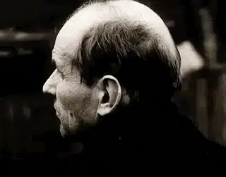
进入“区”后，棕黄色画面还有出现，这些镜头都是在潜行者处于疲惫、孤独之时出现的。
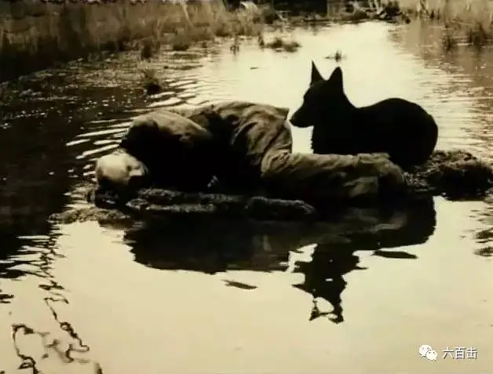
既可以很自然的用色彩去延续和表达潜行者的孤独，又在某种程度上可以看做是“区”内神秘生命眼中的观察。
我们来看一下，当潜行者疲惫的躺着水旁的陆地上时，画面很自然切换为棕黄色的画面。
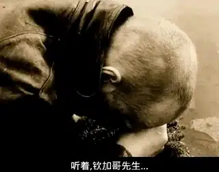
而紧接着的画面就是塔尔科夫斯基的经典画面，镜头慢慢在水面上移动，水下是硬币、注射器、武器、书籍、圣像。
无需多言，这是一个疾病、贪婪、战争、救赎混杂的世界。
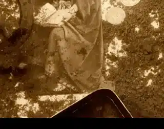
而镜头的移动和切换是充满想象和违法正常逻辑的。
来看一下，这个镜头，从潜行者的头部开始向上移动到水面。
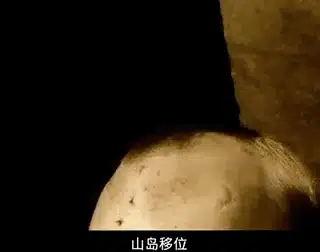
镜头持续向上移动，按照逻辑，镜头会离潜行者越来越远。
但是这个平移镜头的终点又回到了潜行者。
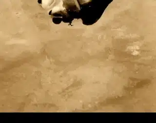
这样的长镜头打破了理性的僵硬，赋予镜头生气。
平移镜头画面下丰富的意象，再加上塔尔科夫斯基父亲的诗句，使得画面充满了诗意和魅力。
甚至你都不会察觉到镜头已经违背了正常的逻辑。
2、似真似幻的声音设计
塔尔科夫斯基在本片中的声音设计是最突出的，可能也因为电影题材包含科技元素，为了营造“区”内不同于寻常的幻觉，塔尔科夫斯基和电影的配乐大师爱德华·阿泰米维下了很多功夫。
塔尔科夫斯基认为音乐会扭曲和改变视觉形象的情绪色调，所以电影中音乐将没有地位，音乐被声音取代，他要求音乐和声音的界限模糊。
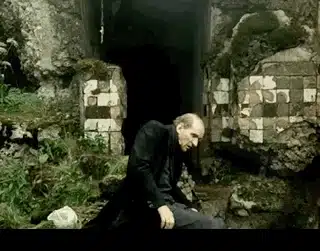
音乐通过合成器来完成，混杂了很多自然的声音。
自然的声音和音乐相互作用到无法区分的地步。
在“区”内，视觉图像和声音之间经常有断开，这种断开使听众不清楚声音是真实还是幻觉。
比如当三人首次进入“区”时，画面中风吹草动，但是声音中没有风的声音，却只有车轮转动的声音。
这种声音效果的断裂，一方面营造出“区”内的似幻似真的感觉，同时，声音的处理自然地将我们的注意力导向人物的内心世界。
让人物可以在内心世界漫游，而观众不会感觉突兀和不舒服。
比如说区内的旅程结束，三个人坐在房间里，沉默，没有声音。
当声音重新开始时，它又是水的声音，但音色不同，柔和温和，好像给人一种宣泄和希望的感觉。
声音慢慢又回到了“区”以外的世界。当摄像机仍然在“区”内显示一池水时，观众开始听到火车的声音，让人想起电影刚开始的场景，外面世界的声音和以前一样，以火车轮，船只的雾角和火车鸣笛为特征。
3、场景 “区” “房间”
这部电影可以研究和探讨的地方非常多，我想没有一个人可以清楚的阐明电影中所有的元素，尤其是对于“区”和“房间”的理解，他们不简简单单是一个物体。
从潜行者的口中可以看出，他们似乎是一种有位格可以交流的生命。
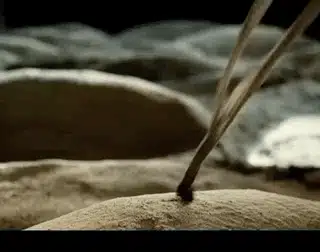
潜行者通过投掷拴在布条上的铁螺丝来探测“区”内的陷阱
“区”需要访客尊重，而访客在“区”中的行动甚至想法又会作用于“区”，“区”会产生变幻，又会影响到访客的命运。
塔尔科夫斯基会很巧妙的用视觉语言去表现“区”的生命性。
比如当作家站在远处，充满疑虑地打量前面的“房间”时，塔尔科夫斯基从“房间”的角度用了一个后拉镜头，给人的感觉就仿佛“房间”有双眼睛在盯着作家。
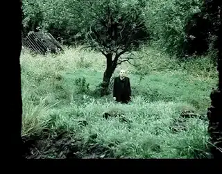
而“房间”能够满足访客的愿望也不一定是你表达出来的愿望，也有可能是你自己都无法察觉的愿望
很多时候，我们并不清楚自己需要什么。
但是“区”和“房间”到底是什么，我们还是无法窥得全貌，也许塔尔科夫斯基也无意让我们了解。
他将“区”和“房间”处理成一种超越性的存在，就像上帝一样，我们是不可能用科学、文学甚至宗教来认识他，也无法用这些去否定他，我们没有能力完全明白“区”和“生命”。
“区”和“房间”的拍摄地点在爱沙尼亚塔林附近的一个被遗弃的水力发电厂，那里是潜行者的中心地带。
河上是化工厂，下游漂浮着有毒液体，在电影中，甚至还有这样一个镜头：夏天下起了积雪，白色的泡沫在河中漂流。其实这是一些可怕的毒药，剧组许多女性的脸上出现过敏反应。
而塔尔科夫斯基最终死于右支气管的癌症，也与这次拍摄有关。
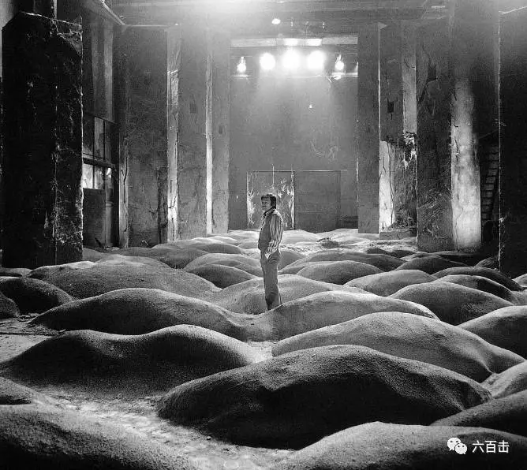
塔尔科夫斯基在片场中
最后我可以很肯定的说，塔尔科夫斯基就是电影界中的米开朗琪罗和巴赫。
他全部的心血和激情都用来描绘永恒和表达信念，他作品中处处都充满着个性和世界冲突下的“痛感”。
但是这种诗意“痛感”给人希望和鼓舞，可以让我们面对罪恶无望的世界，并心怀信念。
这部电影你可以断断续续坚持几次看完
当你像作家、教授那样不断深入人生之“区”时。
你把《潜行者》再看一遍，那将是一场面对自我和永恒的奇妙体验。
那个时候，你一定会被塔尔科夫斯基和《潜行者》震撼。
关注并回复 潜行者，获取电影资源
相关推荐：
《乡愁》 | 没有一个人能够将信仰拍的如此诗意和凝重
这里没有挑逗你眼目情欲的小鲜肉
也没有挑动你肉体情欲的段子
更没有膨胀你今生骄傲的鸡血
我们只在乎那些最质朴真诚的作品
在那里我们才能恢复真正的想象力
我们也坚信这才是我们真正需要的

ID:Six_hundred_hits
长按二维码，一键关注
【六百击】
-END-
电影评论
尽情分享朋友圈

苹果打赏通道